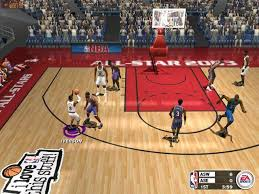
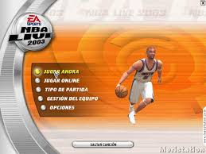

NBA Live es una saga de videojuegos de baloncesto de la compañía estadounidense Electronic Arts basada en la liga de baloncesto de Estados Unidos y Canadá, la NBA, la más famosa en este deporte. Desde su orígenes Electronic Arts había producido
videojuegos deportivos incluyendo de baloncesto, pero fue en 1994 cuando decide sacar una saga consolidada: NBA Live. Sus primeras plataformas fueron PC, Supernintendo y Sega Genesis, en perspectiva isométrica y en 2D. En 1996 salió al mercado una
versión completamente 3D para PlayStation, que es la base que se ha seguido hasta la actualidad en las más modernas plataformas como PlayStation 2, Xbox, Gamecube o la más reciente versión para Xbox 360, Wii, PlayStation Portable y PlayStation 3.
NBA 2003
$ 200
Desripción
El predecesor de la serie NBA Live fue la serie NBA Playoffs , que presentó Lakers vs. Celtics , lanzada por primera vez en 1989 para PC compatibles con MS-DOS y más tarde adaptada para consolas a principios de 1990 para la Mega Drive de Sega .
Este juego se jugó desde una vista horizontal (mientras que las versiones posteriores se movieron a una vista isométrica antes de moverse finalmente a 3D en las consolas más nuevas). El juego fue uno de los primeros en contar con una licencia de la
NBA, que contenía tanto equipos reales de la NBA como similitudes de jugadores y movimientos exclusivos. Detalles como las gafas de Horace Grant son claramente visibles, y Michael Jordan"Air Reverse Layup" está animado con una precisión muy alta. Los
números de los jugadores también fueron visibles. El juego presentó solo ocho de los dieciséis equipos que se clasificaron para los playoffs de la NBA ese año, así como los dos equipos de la NBA All-Star .